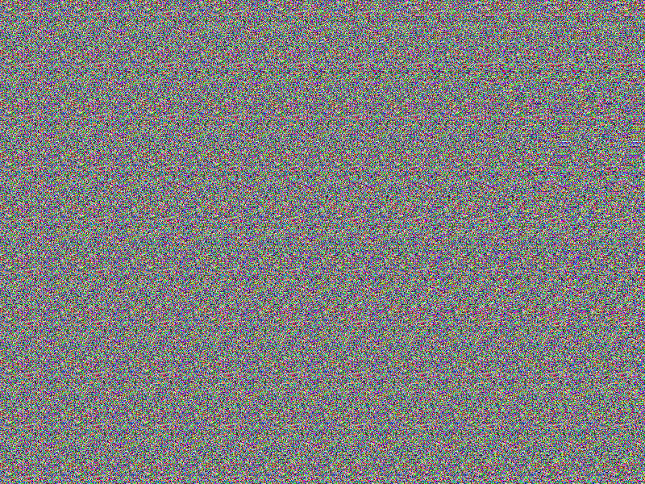
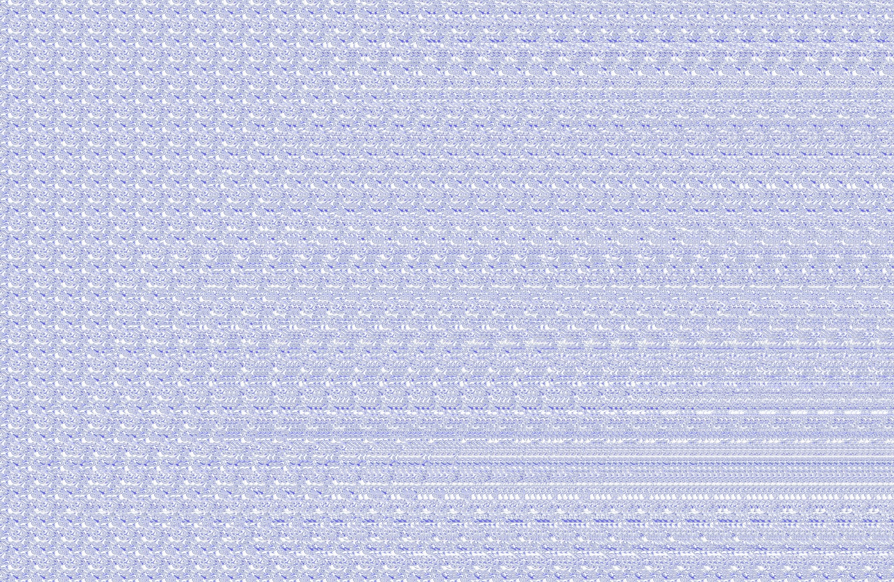
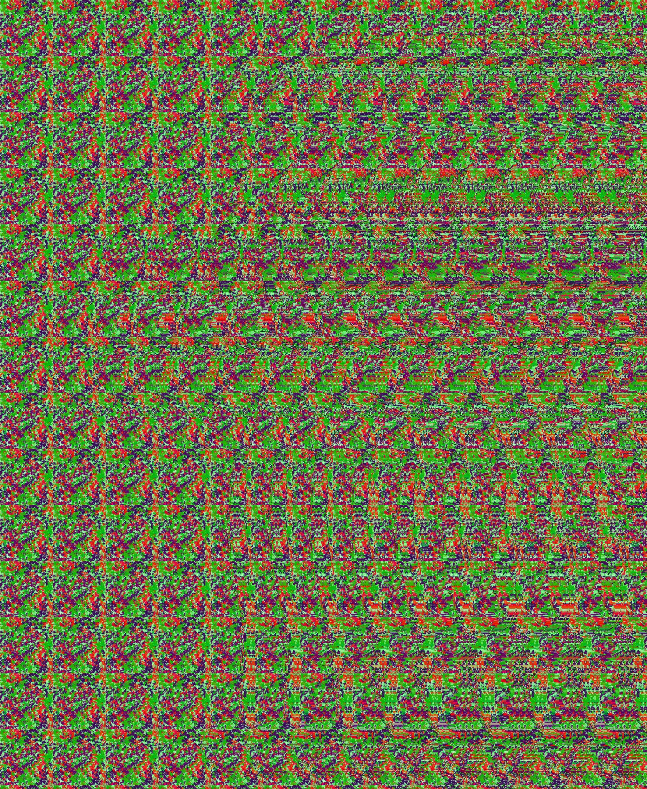
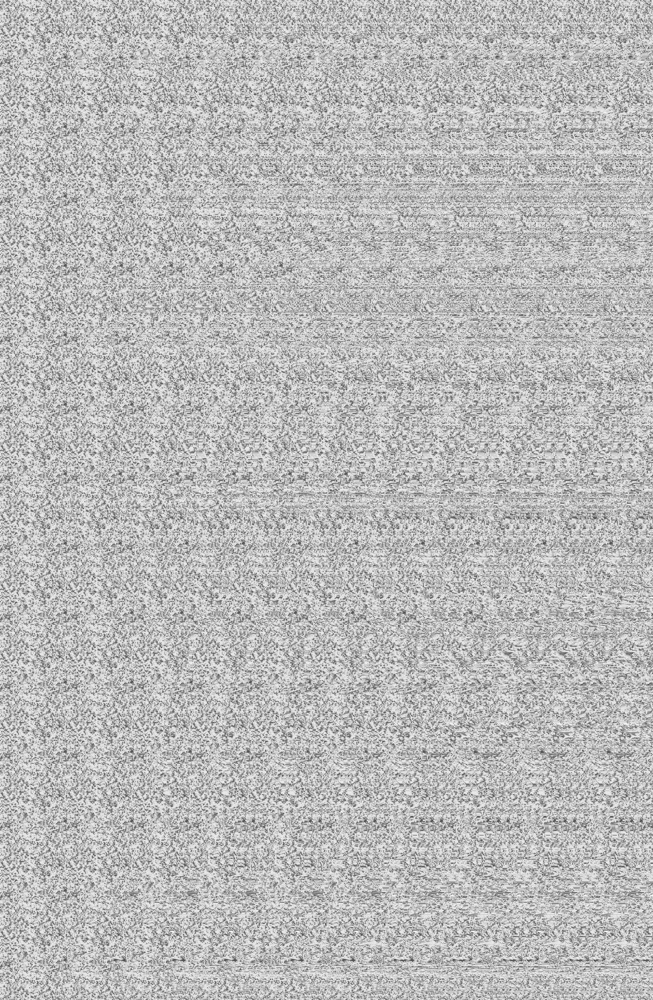

Стереокартинки
Попробуй расслабить взгляд и посмотреть чуть «сквозь» изображение. Не торопись — иногда скрытая глубина появляется не сразу. Здесь нет правильных ответов: просто разглядывай и наслаждайся загадкой.



